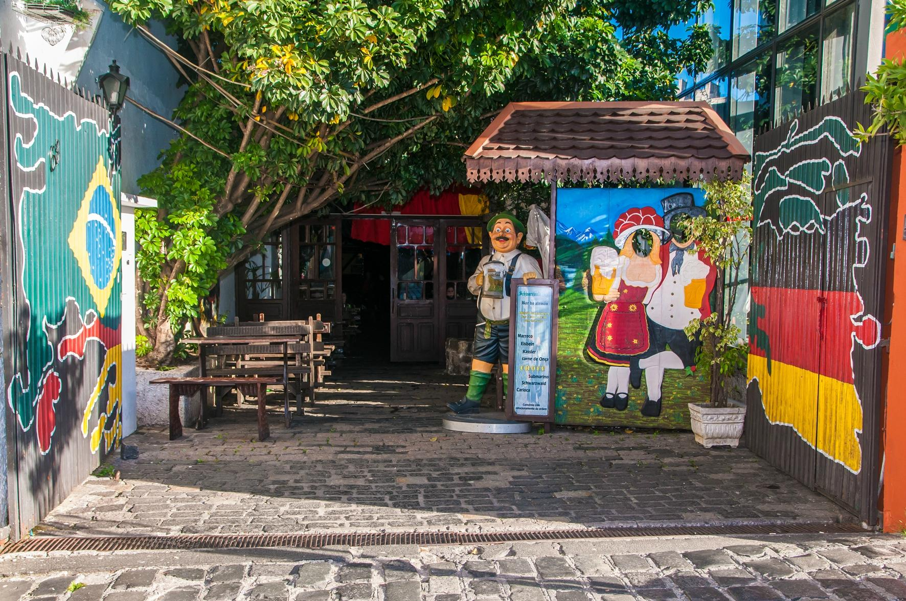
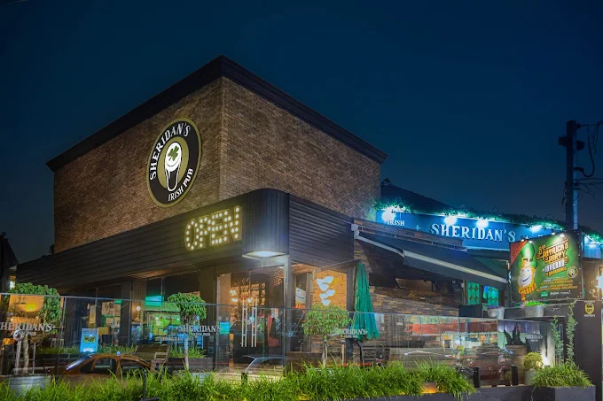
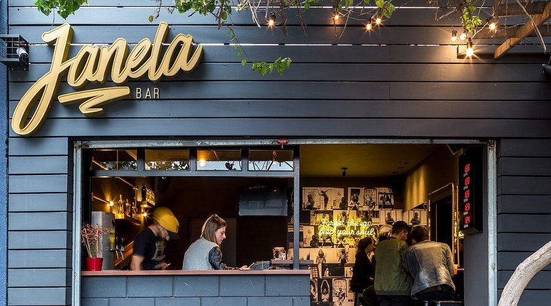
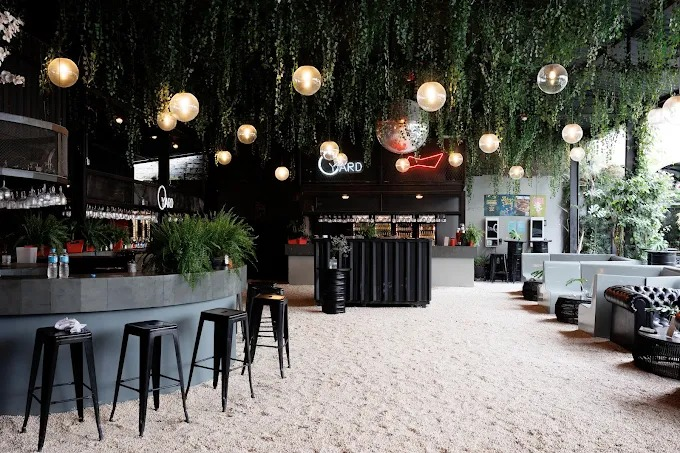
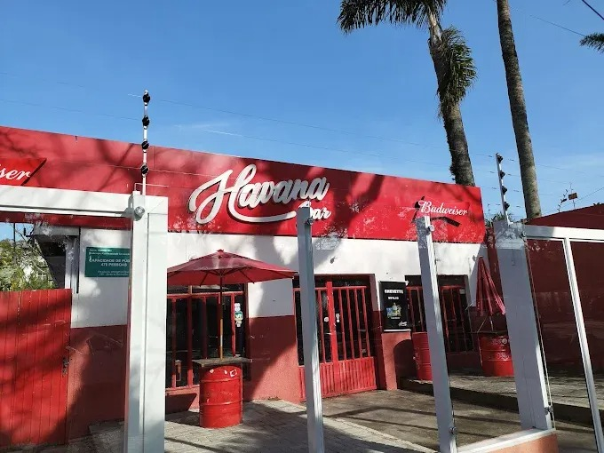
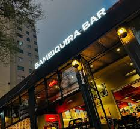
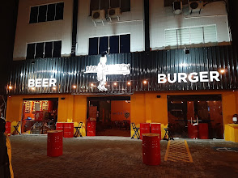
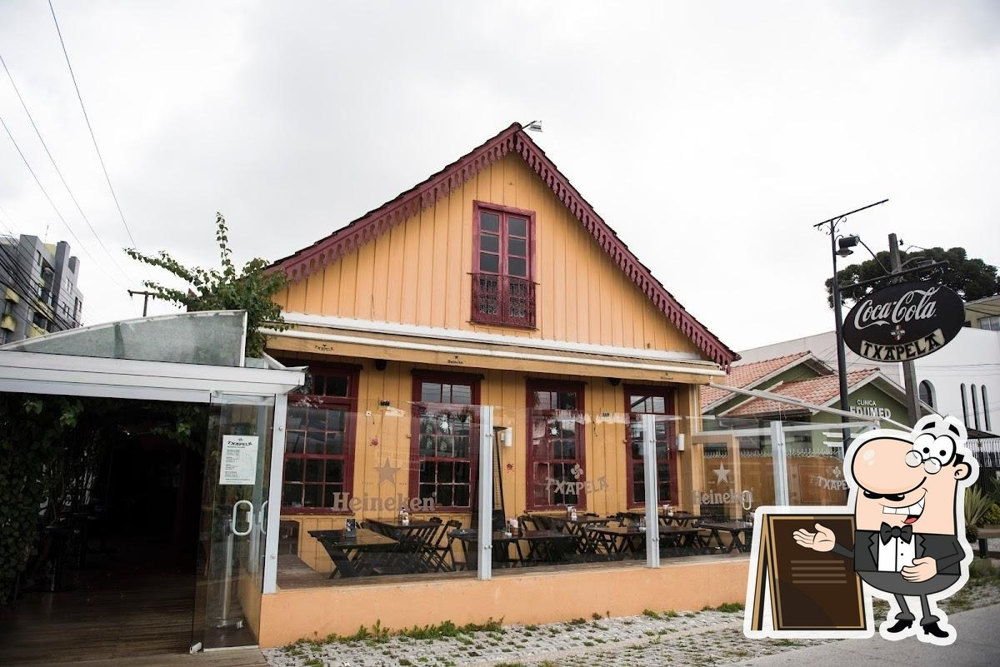

Bar do Alemão
Rua Dr. Claudino dos Santos, n63 - Curitiba
Um dos bares mais tradicionais de Curitiba, famoso pelo submarino.
Site do Bar
Sheridan's Irish Pub
Rua Bpo. Dom José, n2295 - Curitiba
Bar estilo irlandês com música ao vivo.
Site do bar

Yard
Alameda Presidente Taunay, n435 - Curitiba
Bar, club e jardim com experiências únicas.
Site do Bar
Havana
Rua Imac. Conceição, 1206 - Curitiba
É um bar e pub popular entre os estudantes da universidade, conhecido por oferecer bebidas e petiscos a preços acessíveis.
Site do Bar

Cabana
Rua Imaculada Conceição, n1278 - Curitiba
Referências em molhos e conservas artesanais.
Site do Bar